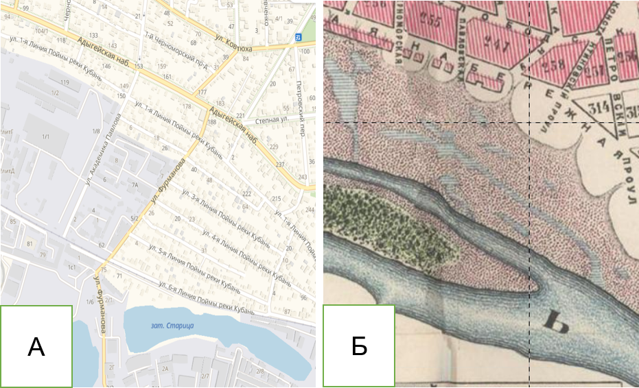
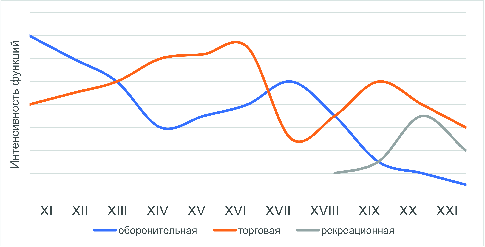

2 Историческая и природная среда
Теоретическая часть
Современный облик населённых пунктов является результатом их продолжительной эволюции под воздействием природных и социально-экономических факторов. В рамках геоурбанистики эти группы могут называться физико- или экономико-географическими соответственно. Вместе данные факторы формируют историческую и природную среду, которые неразрывно взаимодействуют.
На мезо- и макроуровне историко-природная среда формировала экономико-географическое положение городов в системе расселения масштаба региона и страны. Так как ЭГП является достаточно сложной категорией для формализации, в геоурбанистике обычно рассматривают динамику преобладающих функций поселения.
Среди основных функций или специализаций поселений можно перечислить следующие:
- Оборонительная (военная)
- Административная (управленческая)
- Промышленная (индустриальная)
- Сельскохозяйственная (аграрная)
- Транспортная
- Торгово-транзитная
- Торгово-ремесленная
- Культурно-рекреационная (туристская)
Все эти функции находятся в постоянном взаимодействии, образуя локальные особенности специализации того или иного города, некоторые из них доминировали на различных исторических этапах. Так, многие древнерусские города были основаны как военные укрепления, а затем как центры торговли. В XIX в. вместе с развитием сети железных дорог, вдоль них появлялись поселения с выраженными транспортными функциями, а в советские годы было создано множество городов-спутников крупных промышленных предприятий.
В XXI в. вместе с повышением мобильности населения, информации, товаров и услуг преобладание конкретных функций уходит на второй план, трансформируясь в историческую категорию. Несмотря на это, история функций города во многом определяет его нынешние возможности для социально-экономического роста.
На микроуровне историческая и природная среда также определяют различия между разными частями поселений. Среди природных (физико-географических) факторов можно выделить следующие:
- Рельеф (амплитуда высот, расчленённость, крутизна склонов);
- Грунты (характеристика почв, подземных вод, сейсмичность);
- Водные объекты (их расположение, размеры, роль в жизни города);
- Растительность (состав и расположение);
- Климат (температура воздуха, роза ветров, количество и годовое распределение осадков).
Исторические факторы крайне многообразны, но сводятся к трём основным наследованным характеристикам местности:
- Функции (специализация населённого пункта);
- Связи (направленность и интенсивность обмена товарами, услугами, информацией);
- Границы (старые рубежи города, различные собственники на землю).
Все эти факторы могут быть как барьерами, так и драйверами для развития города. Именно они одновременно определяют и составляют экономико-географическое положение населённого пункта или его части на разных территориальных уровнях.
Влияние природной и исторической среды выражено практически во всех элементах городского ландшафта. Характеристики природных факторов обычно учитываются в градостроительстве – от характера грунтов и рельефа зависят инженерные параметры строительства зданий.
Среди элементов городской среды, где может проявляться влияние природных и исторических факторов можно выделить следующие:
- Планировка (улично-дорожная сеть, характер застройки кварталов и микрорайонов)
- Городская семантика (топонимика, памятники, стиль застройки и малых архитектурных форм)
- Функциональные зоны (взаимное расположение и специализация внутригородских территорий)
Примерами подобной обусловленности могут быть промышленные предприятия и полигоны захоронения отходов, как правило, расположенные к востоку от основных жилых районов с учётом преимущественно западного направления ветров. Планировка городских кварталов и топонимика часто могут иметь физико-географическую привязку и отражать историческое состояние среды.
На рисунке 2.13 изображены характерные для природной среды изменения, отражённые в локальной топонимике. За 130 лет река изменила своё русло, однако старая набережная сохранила своё название, а улицы, проложенные на территории пойменной зоны старого русла, напрямую отражают геоморфологию местности (ул. 1-я линия поймы реки Кубань и т. д.)

Практическая часть
Методические рекомендации для формулировки и выполнения задания:
Целью данного занятия является знакомство школьников с историческими и природными факторами городской среды, формировавшими на протяжении времени функции и ЭГП поселения на различных территориальных уровнях.
Данное занятие включает в себя 2 элемента: оценку динамики функций поселения или части крупного города и характеристику исторических и природных факторов городской среды. В зависимости от наличия времени для выполнения заданий учитель может выбрать одно из них, либо выполнить оба.
1) Объектом для оценки динамики функций поселения становится в первую очередь родной для школьников город (для крупных городов, объектом может стать его крупная часть, имевшая собственную историю развития). При небольшом количестве участников каждый школьник может выбрать одну или несколько функций, которые будет исследовать. В случае если в занятии принимает участие более 6 человек, для учащихся из других групп в качестве объекта может быть выбран соседний город или сельский населённый пункт.
2) Характеристика исторических и природных факторов проводится в случае крупных городов для полигона размерами примерно 500*500 м. Для малых городов и сёл участком для исследования может стать вся территория поселения. Учителю рекомендуется выбрать интересный с точки зрения разнообразия условий полигон (с застройкой разного времени, природными объектами на его территории). При участии в занятии более 6 человек возможно разделение школьников на 2 и более групп. В малых городах и сёлах в таком случае объектами исследования для других групп могут стать соседние населённые пункты.
Время, отведённое на выполнение задания, составляет 6 академических часов, из которых 2 отведены на полевые работы. Умения, приобретённые в ходе занятия, станут основой для формирования у школьников целостной картины историко-географической среды своего города и пригодятся им для выполнения последующих заданий.
Этапы выполнения задания:
- Подготовка к полевому выходу
Перед началом полевого этапа учитель может привести локальные примеры воздействия исторических и природных факторов на городскую среду. Далее участникам занятия раздаются картосхемы участков на листах формата А4. Для экономии времени рекомендуется использование заранее распечатанных картографических шаблонов – фрагментов карт из открытых Интернет-источников (Google Maps, OpenStreetMap, Яндекс). По возможности учащимся также предоставляются старые карты участка, выполненные в аналогичном масштабе (например, с сервиса Retromap).
Таблица 2.1. Историко-природные факторы и примеры их воздействия
| № | Фактор | Пример |
|---|---|---|
| 1 | ||
| … |
На отдельном листе на каждую группу учащихся составляются таблицы, в которые школьники будут вносить возможные примеры исторических и природных факторов на исследуемом участке.
- Полевые работы
Учащиеся исследуют указанный участок, отмечая в таблице XXX возможные примеры влияния историко-природных факторов. Опорой может стать сравнение картосхемы, отражающей нынешнее состояние местности с картой ретроспективной ситуации.
Маршрут участников занятия должен пролегать лишь вдоль основных элементов улично-дорожной сети участка, не затрагивая труднодоступные и недоступные территории, что дополнительно должно быть оговорено учителем.
- Камеральная обработка
Основными элементами отчётности школьников по итогам занятия становятся графическое отображение динамики функций поселения (может выполняться только в камеральных условиях), а также заполненная в полевых условиях таблица 2.1 по второй части задания. В результате работы с источниками и консультаций с учителем каждая группа также может представить доклад о роли тех или иных факторов на формирование городской среды полигона.
Необходимые материалы: планшеты для всех участников с подготовленными картосхемами участков и листами для заполнения таблицы 2.1; простые карандаши
Пример оформления выполненного задания:
Пример графического отображения динамики (эволюции) функций поселения на макроуровне:

Данный график является лишь примером возможной визуализации, любые идеи участников занятия лишь приветствуются. Также возможно отразить на графике основные вехи, приводившие к изменению динамики.
Пример заполненной таблицы 2.1:
Таблица 2.2. Историко-природные факторы и примеры их воздействия
| № | Фактор | Пример воздействия |
|---|---|---|
| 1 | Границы | незастроенные кварталы в начале ул. Красной – наследие войскового плаца на окраине города |
| 2 | Рельеф | излом Змиевского проезда связан с пересечением крутого склона долины р. Темерник | | |
| 3 | … | … |
По данным картографических сервисов Яндекс.Карты (https://yandex.ru/maps/) и Retromap (http://www.retromap.ru)↩︎